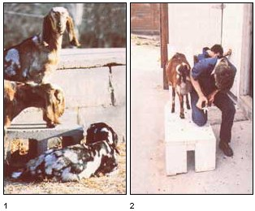

[3] and make sure to have lots of fresh food and water available. [4] A milking stand enables you to hold your goat still during milking, trimming, etc. [5] Here's a face only a mother could trust. In other words, don't try to raise a buck!